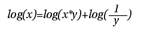
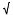

and
and  such that =+, then we can first rotate by , and then by , to achieve the same effect.
such that =+, then we can first rotate by , and then by , to achieve the same effect.Dr. Dobb's Journal April 2008
Recently, I was working on an application that helps helicopter maintenance engineers adjust their helicopters to fly better. This application analyzes data collected during flight, and provides engineers with information to help them adjust the helicopter. This is a very computationally expensive operation, with extensive use of trigonometric and exponential functions, so though the initial prototypes ran very fast on a PC, they were very slow on the target platform—a handheld device running Windows CE on an ARM processor without hardware floating-point support. After several rounds of optimization focused on improving the algorithm, reducing the use of expensive operations, adjusting the memory-allocation patterns to avoid allocating, freeing memory in a loop, and so forth, the application was running considerably faster than the initial prototype. Unfortunately, it was still too slow, so it was time to pull out the "big guns" and use fixed-point math. This final push doubled the speed of the application, finally bringing the performance within acceptable limits. But it wasn't easy. In this article, I explain the fixed-point techniques we used to achieve this performance gain.
I had put off using fixed-point math because the application made extensive use of sines, cosines, and exponential functions that are nontrivial to implement. However, profiling (see sidebar) showed that the mathematical operations were consuming a very high percentage of CPU time, and I had exhausted all other avenues. This was relatively unsurprising, given that the target CPU didn't support floating-point operations in hardware, so all mathematical operations were performed by an emulation library.
Before proceeding, it was important to check the range of possible values—the range for a double is far larger than can be represented in a simple fixed-point type. For this application, 64-bit fixed-point values (35 bits to the left of the point, 28 bits after, and one sign bit) were sufficient as a replacement.
Initially, I hunted the Internet for a free, open-source implementation of fixed-point math. The only implementation I found that provided all the required mathematical operations did speed up the application, as simple operations such as addition and subtraction were considerably improved. Unfortunately, the overall gains weren't as good as had been hoped for. However, seeing the naïve implementations of the more complex functions (calculating sines and cosines from the Taylor series, for example) gave me hope—by improving the implementation of these functions, there was potential for much greater improvements, so I pressed on with renewed vigor. Eventually, the whole fixed-point library was rewritten from scratch, but the final performance gain was enough to justify the time spent in doing so, and it was easier than anticipated. (The complete source code for the fixed-point library and profiling code is available online at www.ddj.com/code/.)
Having changed over to fixed point, the next easy gain came from replacing floating-point and integer constants involved in fixed-point calculations with fixed-point ones. It's easy just to use M_PI or 0 or 1 or even 0.5 in a calculation, and this is not so easy to spot when changing every use of "double" to "fixed." The profiler showed that these constants were responsible for quite a few calls to the converting constructor, so replacing them with fixed-point constants shaved another couple of percents off the runtime.
The single biggest gain was achieved by optimizing the trigonometric and exponential functions. For the trig functions, the CORDIC method was used. (For more information on CORDIC, which is short for "COordinate Rotation DIgital Computer," see "Implementing CORDIC Algorithms," by Pitt Jarvis; www.ddj.com/architect/184408428.) CORDIC gets its name because it uses properties of rotations on a plane to calculate sines and cosines. A vector can be rotated counterclockwise by an angle q using a rotation matrix.
Equivalently, if you have two angles and such that =+, then we can first rotate by , and then by , to achieve the same effect.
The rotation by can then itself be split into further rotations by smaller and smaller angles. The benefit here comes from the fact that you can then pick a set of angles i in advance, and precompute the appropriate sines and cosines. Rather than a time-consuming and potentially inaccurate power-series calculation, the desired sines and cosines can instead be calculated by a short series of multiplications and additions. Rather than using both sines and cosines of the angles i, the cosines can be factored out:
As written, this is fine for some fixed angle theta, but what about a general angle? It can be shown that provided that:
i < i-1
and
i >= 0.5•i-1
then any angle can be made by adding or subtracting each i exactly once up to a precision determined by the number of angles n. Since cos(x)=cos(-x) and tan(x)=-tan(-x), the factored-out product of cosines can be stored as a constant multiplier once the angles have been determined, and the appropriate signs used for the tangents depending on the actual angle .
As a final simplifying step, if you choose the angles i such that tan(i)=2-j for some integer j, then this greatly simplifies the multiplication, as it is now just a simple shift.
We only need to handle angles in the range - /2 to /2, since the sines and cosines of larger angles only vary in sign (if at all), and restricting it to this range limits the number of iterations required.
/2 to /2, since the sines and cosines of larger angles only vary in sign (if at all), and restricting it to this range limits the number of iterations required.
The sine and cosine of an angle can thus be calculated simply by rotating the unit vector from the x axis by the required angle as described: The cosine and sine are the x and y coordinates of the rotated vector.
The inverse tangent can easily be calculated with the CORDIC rotation tables. This time, rather than rotating the unit vector, a vector with an x component of 1 and a y component of the value for which we want the arctan is rotated until it has a y value of 0.
Having found out about using shifts and adds with CORDIC to implement sines and cosines, I wondered if the same could be done for exponentials and logarithms, too. For exponentials it's rather easy, as:
ex+y=ex•ey
So by choosing values of x such that ex= 2n or ex=1+2-n for some n, then exponentials can again be calculated just as a matter of shifts and adds. In each iteration, the current value of x is compared to the suggested value of y. If x is less than y, then that term is ignored, otherwise x=x-y and the result is multiplied by the appropriate value with a shift and add. By running from high values of y to smaller ones, the value of x approaches zero, and the result approaches the correct value for the exponential. For 64-bit fixed point (with 63 significant bits), this requires 63 table entries.
For negative values of x, the principle is the same, but the table values are for ex=2-n or ex =1/(1-2-n). Here we can use the fact that log(2-n)=-log(2n) to avoid duplicate table entries.
Logarithms are slightly more complex to get right, though conceptually just as easy, as they are just a reverse lookup using the same tables as for calculating the exponentials. In fact, the implementation is even easier because logarithms are always positive. The key here is to find where to start the calculation, and you do that by shifting the parameter left until there is a 1 in the most significant bit. By counting the shifts, you know what initial value to use for the result. For example, in the 35.28 fixed-point system being used here, if you had to shift-left 30 times, the original value was 25*y for some y, so you start with a result of log(25) and work from there. Similarly, if you had to shift-left 42 times, then the original value was 2-7*y, so you start with a result of log(2-7).
Once you have the starting result for log(x), it's smooth sailing, as you always have a value with the MSB set to 1. For increasing values of n, check to see if the current value of x>=1+(x*2-n). If it is, then subtract (x*2-n) from the current value of x, and add log(1/(1-2-n)) to the result. Repeat until x==1 or until you're out of bits.
This uses the identity that:
log(x*y)=log(x)+log(y)
so
so
We've already got the values of log(1/(1-2-n)) in a lookup table, so you can reuse them here. It's important to go for increasing values of n, so that the large factors are taken out first.
With the shift-and-add implementations of sines, cosines, exponentials, and logarithms, the runtime was much improved. However, another function was now taking a lot of the time—the square-root function. This had been naïvely implemented using a Newton-Raphson approximation, and was taking a very long time to converge in some cases. What was needed was a systematic method of calculating a square root that had a bounded iteration count.
Yet again, you can use powers of two to your benefit. If y=x then y2=x. If you break y down by extracting the highest power of 2, so y=2n+r, then y2=22n+r*2(n+1)+r2. Consequently, you can find n from the highest even power of two in x, then it's just a matter of finding r, which you can do by trial and error, hunting for each bit in turn.
If you start with a=2n, and z=x-a2, then you can iterate through the remaining powers of two less than n to find the result. In each iteration you try y=a+2m+r1, for decreasing powers of m. Now, you know that y2=a2+2*a*2m+22m+r2, and the ideal is that r1 (and thus r2) is zero, so y=x. However, in each iteration you've got z=x-a2, so you need to compare z against 2*a*2m+22m. Since we're going in decreasing values of m, if z>=2*a*2m+22m, then you know that 2m is a component of y, since r2 will always be positive. Because a given power of 2 can only be present once, you can now move to the next smaller value of m, updating the new value of a and z. Since you've got a fixed-point value, once you run out of bits you're done, so there is a hard limit on the number of iterations.
After investing the effort in optimizing the complex operations, plain old multiply and divide were now top of the heap. These functions are more than just simple integer operations, because they need to take care of the fixed-point offset. Not only that, but the target platform is a 32-bit platform, so the compiler-supplied 64-bit integer operations are multiple instructions anyway, thus it is important to ensure that every instruction does something useful. For multiplication, this means splitting the top 32 bits and the bottom 32 bits—there's no point doing unnecessary 32-bit times 64-bit multiplications just for completeness. Doing the split like this also lets the appropriate bit shifts be incorporated directly without having to worry about loss of precision.
Division is more complicated, as to get the final answer correct to the available precision, you need more than 64 bits in some cases. To circumvent this problem, when the numerator is more than the denominator, then the denominator is scaled up until it is at least as big as half the numerator. This then makes for division of values of similar size, so the shift-and-add method used for the actual calculation is most effective, and doesn't lose any precision—basically, each bit is calculated in turn, starting with the most significant bit of the result.
Using fixed-point math gave a considerable performance boost to this application, and I anticipate that there are many other applications that could benefit from the techniques described here. It is important to check that the required range of values for an application can comfortably be represented within the chosen fixed-point representation.
|
Measure, Measure, Measure When trying to optimize code, it's important to profile both before and after an optimization. Unfortunately, on the embedded target there was no profiler available, and the profile on the PC was radically different due to the different CPU. This left only one sensible option—write a profiler. Actually writing a full-blown profiler that can integrate with the compiler and get full line-by-line performance data is a huge task, and well outside the scope of this project, so I opted for the next best thing—a code-based profiler. Because the application is written in C++, I could make use of the magic of macros and deterministic destruction to get timing data from every block of code. It works really simply: Replace the opening brace of every block of code to be tested with "{INSTRUMENT_BLOCK;". In traced builds, INSTRUMENT_BLOCK expands to an instance of a class which records profiling data. In nontraced builds, it expands to an empty string. This then allows the recording of call-count and execution time for every block of code in the application, which can then be dumped to a file on exit. Profiling of individual blocks can be adjusted by adding and removing the INSTRUMENT_BLOCK from the start; individual lines can be profiled by enclosing them in their own block, and adding the INSTRUMENT_BLOCK invocation to that. Though the profiling does make the application run slower (about 10 times slower in fact, which made test runs VERY tedious, often taking over half an hour per run), the results can generally by adjusted to account for the overhead of the profiling, and it does highlight the parts of the application that are most in need of optimization—the functions which consume the most total runtime. Some of these are functions that are run millions of times, and others are run a few times but take a long time for each execution. —A.W. |